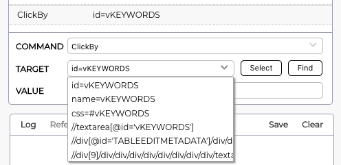

GeneralCan I debug a test?Yes. You can use GeneXus debugger and run tests in a "step by step" mode. Is the "Build" process affected when using or running tests?No. Test objects are not referenced by any other object in the KB, which means that running a "Build All" or "Rebuild All" process in your KB will not generate test-related binaries in your working copy or deploy. Can I test batch processes?Yes. Unit testing capabilities enable to test batch process. Where can I find GXtest?GXtest 4 is released officially inside GeneXus 16 upgrades. How can I know GXtest version build number programmatically in advance?GXtest channel is released over AWS S3 with a "key" version. Building ProcessWhy a build process is triggered before running Unit tests?Unit Tests are special GeneXus procedures that need to be generated, so each time you run a test GeneXus check if the tests have modifications. Only if the test itself has changed or one of its dependencies (generated test SDT, test DataProvider, and objects) has changed, then it forces to build the test case object. This means that objects in the KB will not be generated unless they are referenced by tests that have references pending to be built. Does the unit test objects modify the original object spec/generation in any way?No. They are isolated objects that don't change other object behavior. UI AutomationHow to run tests using different browsers?You can change the default browser on your KB properties or just do it explicitly on your test using the Browsers' domain. I.e.: &driver.SetBrowser(Browsers.Firefox) How to run a test in a remote browser?GXtest 4 supports Selenium / WebDriver architecture. You will need to have a Selenium node listening for running tests over some IP/port. Then, just use it on your test: &driver.SetRemoteWebDriver(url) How to run the same test against different environments / URLs? (ie. dev, staging, pre-prod)There are 2 ways to do this since the UI test will start running after the Go command. 1- Using the Go command to navigate to different environments:
&driver.Go("http://stagingenv:port/App/home.aspx")
2- Or using the "Base URL" property on your KB/Environment in GeneXus IDE, plus using the Go() command with relative paths, like:
&driver.Go("home.aspx")
How to use the right targets (HTML elements) in a Command?When simulating user actions over HTML controls, commands need the right target to run against.  Does GXtest4 support Custom Commands (like GXtest v3)?In older versions of GXtest, there were special commands used to interact with custom HTML elements and JS when was not possible using native commands. This is no longer needed since GXtest 4 can interact with any HTML element on a webpage, even if they are not GeneXus native web controls. How to add validations over a webPage?Use Assertions: when recording a test, by right-clicking over an HTML control: How to add test iterations to use different data inputs and outputs?You can use a For in the test over a DataProvider or other Data sources to add different interactions. I want to run tests using Safari, but the "Browsers" domain's Enum values didn't have that option. Can I?Yes. You can run on any browser supported by WebDriver technology.
|
| Backlinks |
| Toc:GXtest v4 |